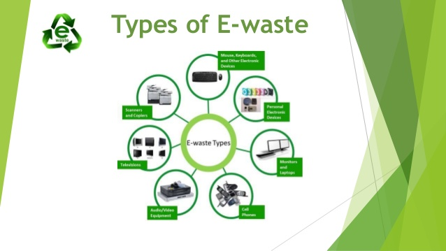

According to the California Integrated Waste Management Board, electronic discards, or e-waste, is one of the fastest growing segments of our nation's waste stream. In addition, some researchers estimate that nearly 75 percent of old electronics are in storage, in part because of the uncertainty of how to properly dispose of these items.
